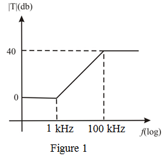

Refer to Figure 16.13 in the textbook to design a first-order op amp-RC spectrum-shaping network.
From the circuit, the input resistance is,
Rearrange the equation.
Substitute  for
for  in the equation.
in the equation.
Thus, the value of  is,
is,
Refer to Figure 16.13 in the textbook to design a first-order op amp-RC spectrum-shaping network.
From the circuit, the input resistance is,
Rearrange the equation.
Substitute for in the equation.
Thus, the value of is,
The dc gain of the above diagram is,
Substitute  for
for  and
and  for dc gain in the equation.
for dc gain in the equation.
Thus, the value of  is, .
is, .
The pole frequency is,
Rearrange the equation.
Substitute for and  for
for  in the equation.
in the equation.

Thus, the value of  is,
is,
The zero frequency is,
Rearrange the equation.
Substitute  for and
for and  for
for  in the equation.
in the equation.
Thus, the value of is,
The high frequency gain is,
Convert the gain into dB.

Thus, the high frequency gain is .
The magnitude of transfer function versus frequency is shown in Figure 1.
